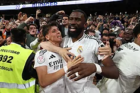

El Madrid sella su pase en el manicomio del Bernabéu
Dos goles de Bellingham y Tchouameni en cuatro minutos rescataron a los de Ancelotti ante una Real Sociedad que estuvo clasificada y fue ganando siempre. El tanto final de Rudiger hace que los de Ancelotti ya esperen a Atlético o Barça en La Cartuja.
Llegaba a este partido en el Bernabéu ante la Real Sociedad con el deber cumplido, por alcanzar el penúltimo escalón, y con una ventaja mínima de la ida. Lo que se tradujo en la apuesta de Carletto por Real Madrid funcionarial con una defensa sospechosa, con Lucas y Alaba, y arriba dando minutos a un Endrick que ha convertido la Copa en su pasarela y es el único que contagia su entusiasmo en esta competición.

Imanol: "El 3-3 viene de un fuera de juego de Mbappé, no se por qué no se ha pitado..."
Imanol estaba orgulloso del partido de sus jugadores, pero triste por la eliminación. Lo vio cerca. "Nos hemos quedado fuera de la Europa League y de la Copa ante dos grandes de Europa", se lamentaba el entrenador txuri urdin, que rescataba una jugada polémica como una de las claves del partido: el fuera de juego de Mbappé en la jugada que dio origen al córner que precedió al 3-3. "Es fuera de juego y esas siempre se pitan, no sé por qué esta vez no... El Madrid es un grande y no necesita ayudas. Tengo muy claro que no hubieran dado el gol si hubiera pasado en el otro área".
El entrenador de la Real estaba molesto por la decisión, pero tampoco quería centrar sus declaraciones en ese fallo de los colegiados. Imanol se quedaba con el partidazo de sus jugadores y lanzaba un mensaje optimista de de cara al futuro. Con su renovación en el área, mostró su amor a la Real. "Siempre ha tenido ganas de seguir en el club y quiero estar aquí muchos años. Ni una victoria, ni una derrota me van a cambiar mis ganas de seguir en la Real Sociedad".